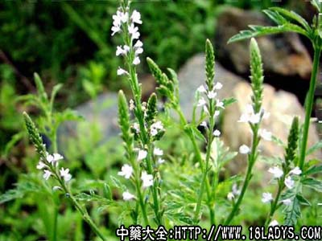

马鞭草(中药材植物名:马鞭草)(植物科目:马鞭草科)

古籍名：马鞭草《名医别录》。
别名：铁马鞭、马板草、龙牙草。
植物名：马鞭草。
生长换将：本品为多年生草本，生于旷野草地上，村庄附近空地上，路旁等。
分布：广东各地均有，我国各省亦有。
入药部分：全草。
采集期：夏、秋。
自采地点：郊外。
性味：性凉、味微苦。
功能：通经、散瘀、清热、解毒、止痒。
主治、用量和用法：1、闭经：干用1两，清水煎服；2、疝气：干用1至2两，加瘦肉适量，清水煎服；3、皮肤痕痒、疮疡：用适量，煎水外洗；4、跌打，配伍用。
（方歌）散瘀清热马鞭草，血热闭经用之宝，治疝须用瘦肉煲，皮肤疮疡外洗好。
参考资料：《广东省中医验方交流汇编》内记载：治黄病方：马鞭草适量煎汤，常饮自愈；治血崩方：马鞭草两株、益母草一株，用水煎，冲酒服；治喉痛方：生马鞭草叶15片，煎水含服。
《广州市中医验方选集第一集》市一人民医院治马疽菌感染验方：生马鞭草两半、生狗肝菜两半、捶烂取汁，和酒少许冲服，渣外敷。